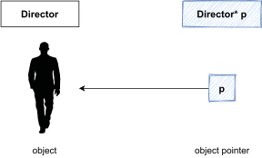
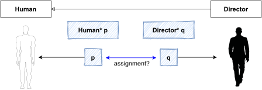
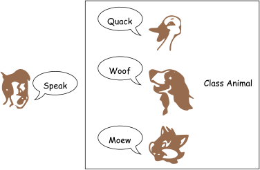
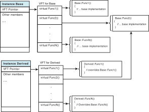
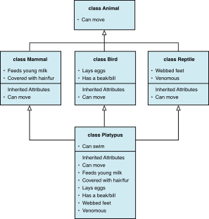
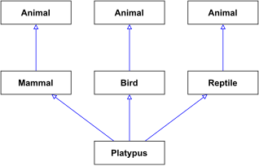

6 POLYMORPHISM
6.1 Basics of Polymorphism
Object Reference and Object Pointer

Object Pointer and Assignment

Polymorphism
General
“Poly” is Greek for many, and “morph” means form. Polymorphism is that feature of object-oriented languages that allows objects of different types to be treated similarly.
C++
Polymorphism allows an object reference variable or an object pointer to reference objects of different types and to call the correct member functions, depending upon the type of object being referenced.

Need for Polymorphic Behavior
It is possible that both
TunaandCarpprovide their ownTuna::Swim()andCarp::Swim()methods to makeTunaandCarpdifferent swimmers.If a user with an instance of
Tunauses the base class type to invokeFish::Swim(), he ends up executing only the generic partFish::Swim()and notTuna::Swim(), even though that base class instanceFishis a part of aTuna.
Listing 1
#include <iostream>
using namespace std;
class Fish {
public:
void Swim() {
cout << "Fish swims!" << endl;
}
};
class Tuna:public Fish {
public:
// override Fish::Swim
void Swim() {
cout << "Tuna swims!" << endl;
}
};
void MakeFishSwim(Fish& InputFish) {
// calling Fish::Swim
InputFish.Swim();
}
int main() {
Tuna myDinner;
// calling Tuna::Swim
myDinner.Swim();
// sending Tuna as Fish
MakeFishSwim(myDinner);
return 0;
}Polymorphic Behavior Implemented Using Virtual Functions
The virtual function provides the ability to define a function in a base class and have a function of the same name and type in a derived class called when a user calls the base class function.
Syntax
class Base {
virtual ReturnType FunctionName (Parameter List);
};
class Derived : public Base {
ReturnType FunctionName (Parameter List);
};UML

Listing 2
#include <iostream>
using namespace std;
class Fish {
public:
virtual void Swim() {
cout << "Fish swims!" << endl;
}
};
class Tuna:public Fish {
public:
// override Fish::Swim
void Swim() {
cout << "Tuna swims!" << endl;
}
};
class Carp:public Fish {
public:
// override Fish::Swim
void Swim() {
cout << "Carp swims!" << endl;
}
};
void MakeFishSwim(Fish& InputFish) {
// calling virtual method Swim()
InputFish.Swim();
}
int main() {
Tuna myDinner;
Carp myLunch;
// sending Tuna as Fish
MakeFishSwim(myDinner);
// sending Carp as Fish
MakeFishSwim(myLunch);
return 0;
}Need for Virtual Destructors
- What happens when a function calls operator
deleteusing a pointer of typeBase*that actually points to an instance of typeDerived?
#include <iostream>
using namespace std;
class Fish {
public:
Fish() {
cout << "Constructed Fish" << endl;
}
~Fish() {
cout << "Destroyed Fish" << endl;
}
};
class Tuna:public Fish {
public:
Tuna() {
cout << "Constructed Tuna" << endl;
}
~Tuna() {
cout << "Destroyed Tuna" << endl;
}
};
void DeleteFishMemory(Fish* pFish) {
delete pFish;
}
int main() {
cout << "Allocating a Tuna on the free store:" << endl;
Tuna* pTuna = new Tuna;
cout << "Deleting the Tuna: " << endl;
DeleteFishMemory(pTuna);
cout << "Instantiating a Tuna on the stack:" << endl;
Tuna myDinner;
cout << "Automatic destruction as it goes out of scope: " << endl;
return 0;
}- To avoid this problem, we use virtual destructors
class Fish {
public:
Fish() {
cout << "Constructed Fish" << endl;
}
virtual ~Fish() { // virtual destructor!
cout << "Destroyed Fish" << endl;
}
};Static binding vs Dynamic binding
Binding
- The determination of which method in the class hierarchy is to be used for a particular object.
Static (Early) Binding
- When the compiler can determine which method in the class hierarchy to use for a particular object.
Dynamic (Late) Binding
- When the determination of which method in the class hierarchy to use for a particular object occurs during program execution.
How Do virtual Functions Work
- Consider a
class Basethat declared N virtual functions:
class Base {
public:
virtual void Func1() {
// Func1 implementation
}
virtual void Func2() {
// Func2 implementation
}
// .. so on and so forth
virtual void FuncN() {
// FuncN implementation
}
};class Derivedthat inherits fromBaseoverridesBase::Func2(), exposing the other virtual functions directly fromclass Base:
class Derived: public Base {
public:
virtual void Func1() {
// Func2 overrides Base::Func2()
}
// no implementation for Func2()
virtual void FuncN() {
// FuncN implementation
}
};The compiler sees an inheritance hierarchy and understands that the Base defines certain virtual functions that have been overridden in Derived. What the compiler now does is to create a table called the Virtual Function Table (VFT) for every class that implements a virtual function or derived class that overrides it.

- Each table is comprised of function pointers, each pointing to the available implementation of a virtual function
void DoSomething(Base& objBase) {
objBase.Func1(); // invoke Derived::Func1
}
int main()
{
Derived objDerived;
objDerived.Func2();
DoSomething(objDerived);
};Abstract Base Classes and Pure Virtual Functions
- A pure virtual function is a virtual member function of a base class that must be overridden.
- When a class contains a pure virtual function as a member, that class becomes an abstract base class.
- An abstract base class cannot be instantiated.
Syntax
class AbstractBase {
public:
virtual void DoSomething() = 0; // pure virtual method
};Object-Oriented Design
- Sometimes it is helpful to begin a class hierarchy with an abstract base class. The abstract base class represents the generic, or abstract, form of all the classes that are derived from it.
Principle
“High-level modules should not depend upon low-level modules. Both should depend upon abstractions.”
“Abstractions should not depend on details. Details should depend on abstractions.”

UML

Listing 3
#include <iostream>
using namespace std;
class Fish {
public:
// a pure virtual function Swim
virtual void Swim() = 0;
};
class Tuna:public Fish {
public:
void Swim() {
cout << "Tuna swims" << endl;
}
};
class Carp:public Fish {
void Swim() {
cout << "Carp swims" << endl;
}
};
void MakeFishSwim(Fish& inputFish) {
inputFish.Swim();
}
int main() {
// Fish myFish; // Fails
Carp myLunch;
Tuna myDinner;
MakeFishSwim(myLunch);
MakeFishSwim(myDinner);
return 0;
}6.2 Diamond Problem
Diamond Problem
Replicated based class
- With the ability of specifying more than one base class, there may be a chance of having the same base class more than once.
Diamond problem


- What happens when we instantiate a
Platypus? How many instances of classAnimalare instantiated for one instance ofPlatypus?

Lisiting 4
#include <iostream>
using namespace std;
class Animal {
public:
Animal() {
cout << "Animal constructor" << endl;
}
int Age;
};
class Mammal:public Animal {
};
class Bird:public Animal {
};
class Reptile:public Animal {
};
class Platypus:public Mammal, public Bird, public Reptile {
public:
Platypus() {
cout << "Platypus constructor" << endl;
}
};
int main() {
Platypus duckBilledP;
// Age is ambiguous as there are
// three instances of base Animal
duckBilledP.Age = 25;
return 0;
}Using virtual Inheritance to Solve the Diamond Problem
- The solution is in virtual inheritance
Syntax
class Derived1: public virtual Base {
// ... members and functions
};
class Derived2: public virtual Base {
// ... members and functions
};Lisiting 5
#include <iostream>
using namespace std;
class Animal {
public:
Animal() {
cout << "Animal constructor" << endl;
}
int Age;
};
class Mammal:public virtual Animal {
};
class Bird:public virtual Animal {
};
class Reptile:public virtual Animal {
};
class Platypus:public Mammal, public Bird, public Reptile {
public:
Platypus() {
cout << "Platypus constructor" << endl;
}
};
int main() {
Platypus duckBilledP;
// no compile error
duckBilledP.Age = 25;
return 0;
}6.3 Virtual Copy Constructors
Definition
It is technically impossible in C++ to have virtual copy constructors
Virtual copy constructors are not possible because the
virtualkeyword in context of base class methods being overridden by implementations available in the derived class are about polymorphic behavior generated at runtime.Constructors, on the other hand, are not polymorphic in nature as they can construct only a fixed type, and hence C++ does not allow usage of the virtual copy constructors.
Design pattern: Propotype Pattern
Virtual Clone Method
class Fish {
public:
virtual Fish* Clone() const = 0; // pure virtual function
};
class Tuna:public Fish {
// ... other members
public:
Fish* Clone() const { // virtual clone function
return new Tuna(*this); // return new Tuna that is
// a copy of this
}
};6.4 Workshop
✒ Quiz
What is a virtual method?
When does static binding take place? When does dynamic binding take place?
What is an abstract base class?
💻 Exercises
- Programming Challenges of chapter 15 [@Gaddis2014]
9. File Filter
12. Ship , CruiseShip , and CargoShip Classes